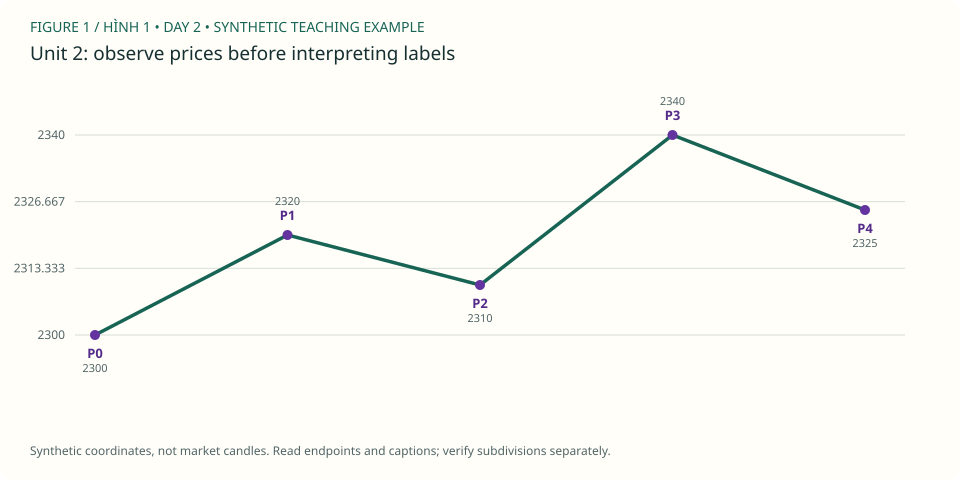

PDF CURRICULUM · UNIT 02 / 30
Swing và điểm bắt đầu / Swings and anchor selection
chọn pivot nhất quán, không kéo điểm đầu để cứu count.
← Roadmap · Unit trước · Unit tiếp
1. Học và ví dụ theo unit / Study
- Đọc: PDF 62–64, cách chọn turning point.
- Mục tiêu: chọn pivot nhất quán, không kéo điểm đầu để cứu count.
- Nguyên lý: wick/close; major/minor swing; pivot confirmation; ngữ cảnh trước điểm bắt đầu.
- Ví dụ mới: đỉnh ở nến 20 cần hai nến phải hoàn thành mới xác nhận theo quy ước luyện tập.
- Bài tập: nến nào sớm nhất biết pivot? Nếu nến 22 tạo đỉnh cao hơn, đánh giá lại ra sao?
- XAUUSD: 100 nến H4, đánh dấu swing không dùng số Elliott; ghi timestamp pivot và lúc xác nhận.
- Nộp/đạt: bảng 10 pivot hoặc ghi thiếu mẫu; không dùng pivot trước khi biết.
Đọc hình gốc & trả lời trên chart / Source-chart lesson
Gold Daily: wave 1 mở rộng / Extended first wave · Steve Sinclair, Elliott Waves Made Simple, Image 10, PDF p.21. Mở trang gốc / Original page
- Quan sát / Observe: Gold Daily trong sách có cả nhãn xanh cấp lớn và (i)–(v) cấp nhỏ. / The book's Gold Daily chart distinguishes major blue labels from smaller subdivisions.
- Suy luận / Reason: Neo vào cực trị wick, không vào chữ nhãn hoặc thân nến. Nhãn là giả thuyết; high/low là dữ kiện quan sát. / Anchor to wick extremes, not labels or candle bodies; labels remain hypotheses.
- Giới hạn / Limit: Gold trong sách khác tệp XAUUSDm của bạn; không nối giá hay timestamp giữa hai nguồn. / Book Gold and your MT5 export are separate sources.
Ảnh trích từ PDF bạn cung cấp, giữ nhãn gốc để học cách đọc; không phải dữ liệu MT5 của lab. Bấm vào điểm giá/đỉnh/đáy được hỏi (không bấm chữ nhãn), rồi “Kiểm tra”. Mỗi câu có hình riêng để lưu hai điểm độc lập. / Click the requested endpoint, not the label text; each question has its own saved point.
Câu hình 1 / Image question 1
Bấm wick đáy bắt đầu toàn nhịp, ở bên trái. / Click the left-hand origin wick low.
Chưa chọn điểm / No point selected.
Câu hình 2 / Image question 2
Bấm wick đáy wave 2 cấp lớn, không phải (ii). / Click the major wave 2 low, not (ii).
Chưa chọn điểm / No point selected.
Chấm tọa độ trong vùng dung sai quanh endpoint được hỏi, không tự xác nhận cấu trúc Elliott hay hiệu quả giao dịch. Dùng trường X/Y nếu không thao tác chuột; gốc tọa độ ở góc trên trái. Lưu trả lời hoặc export để giữ điểm, lời giải và nguồn hình.
Sơ đồ giả định bổ sung / Additional synthetic sketch

Sơ đồ giá giả định: đọc cùng ví dụ của bài. P là điểm quan sát, không là số sóng Elliott. Không mô tả RSI, contract size hoặc kết quả giao dịch từ đường giá này.
Quy tắc, guideline và lưu ý nguồn · Cách làm và rubric bài vẽ
2. Trắc nghiệm / Multiple-choice practice
6 câu chọn đáp án, có giải thích sau khi chấm; 4 nhiệm vụ tự luận/vẽ bên dưới. Đây là luyện tập offline, không phải bài thi chống xem đáp án.
Chưa chấm / Not graded.
3. Bài vẽ của unit 2 / Draw here
Nhiệm vụ: 100 nến H4, đánh dấu swing không dùng số Elliott; ghi timestamp pivot và lúc xác nhận.
Giải thích cần nộp: nến nào sớm nhất biết pivot? Nếu nến 22 tạo đỉnh cao hơn, đánh giá lại ra sao?
Starter window: XAUUSDm H4, 2023-02-01 00:00:00 → 2023-02-22 08:00:00. Ban đầu 48/96 nến. Cửa sổ có thể không chứa pattern yêu cầu; ghi no-count và dùng lịch sử rộng hơn, không ép nhãn để đạt quota.
data/Mt5Data/XAUUSDm_H4_202101030000_202609250000.csv · server-time offset unknown · không resample. Từng unit có nguồn/window identity riêng.
Chọn wick bắt đầu (low cho nhịp tăng, high cho giảm), rồi bấm lần lượt trên chart hoặc chọn nến và “Thêm điểm”. Tắt tự chuyển nhãn khi vẽ W–X–Y, nhiều degree hoặc swing riêng. Giá neo đúng wick thật, không kéo đến giá tùy ý.
Giới hạn: diagonal, complex/running/expanding triangle và policy giao dịch cần nhận xét thủ công; dùng swings thay vì ép chúng qua checker impulse. Mode triangle chỉ kiểm tra nhãn/thứ tự và các chân quan sát, không chứng nhận hình học, biến thể hay internals. Chưa biết executable bid/ask, timezone offset hoặc broker specs. OHLC không chứng minh fill hay lợi nhuận.
Daily / H4 / H1 cùng mốc quan sát
Đo các điểm đã chọn / Measure anchors
2 điểm: retracement; 3 điểm: projection; 6 điểm: độ dài 1/3/5. Không dùng kết quả đo để cứu count sai.
Gửi JSON và SVG vào chat để được nhận xét. Không tự upload. JSON gồm đúng nến đang thấy, endpoints, journal và câu trả lời; giữ bản gốc trước khi sửa.
OHLC và các nhãn đã vẽ
| Timestamp | Open | High | Low | Close | Labels |
|---|
Ví dụ pivot quan sát — không phải đáp án bài vẽ
Các P-pivot và candidate bên dưới được chọn hậu nghiệm trong 48 nến đầu, không chứng nhận đúng pattern của unit này. Giữ đóng cho đến khi bạn tự vẽ.
4. Tự luận, nộp bài và sửa / Written review
Tiêu chí tự đối chiếu — làm trước khi mở
sau close nến 22 và chỉ khi điều kiện vẫn đúng; không gán kiến thức đó cho nến 20.
Đối chiếu đúng source, wick và cutoff; kiểm tra hard rules; alternatives/internals có thể cần người đọc chart. Không chấm bài vẽ bằng điểm trắc nghiệm hoặc hướng giá sau đó.
Đạt bài: bảng 10 pivot hoặc ghi thiếu mẫu; không dùng pivot trước khi biết.. Trắc nghiệm ≥5/6 chỉ là checkpoint; 4 bài tự luận/vẽ cần đánh giá theo rubric (≥16/20, không lỗi nghiêm trọng), không tự chứng nhận hoàn thành.
Workbook mới tách biệt khóa cũ. Lưu câu trả lời trước khi rời bài; lỗi lưu sẽ hiện rõ, hãy export nếu browser không lưu được.